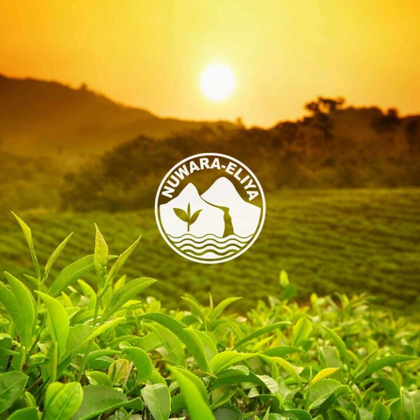
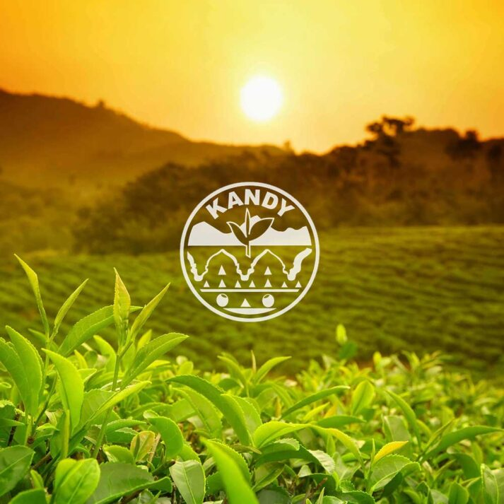
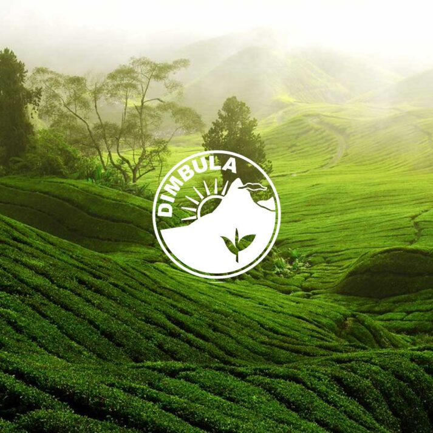
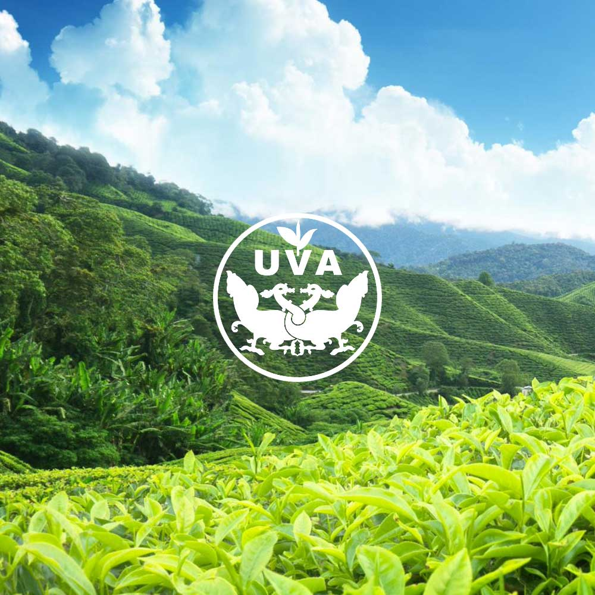
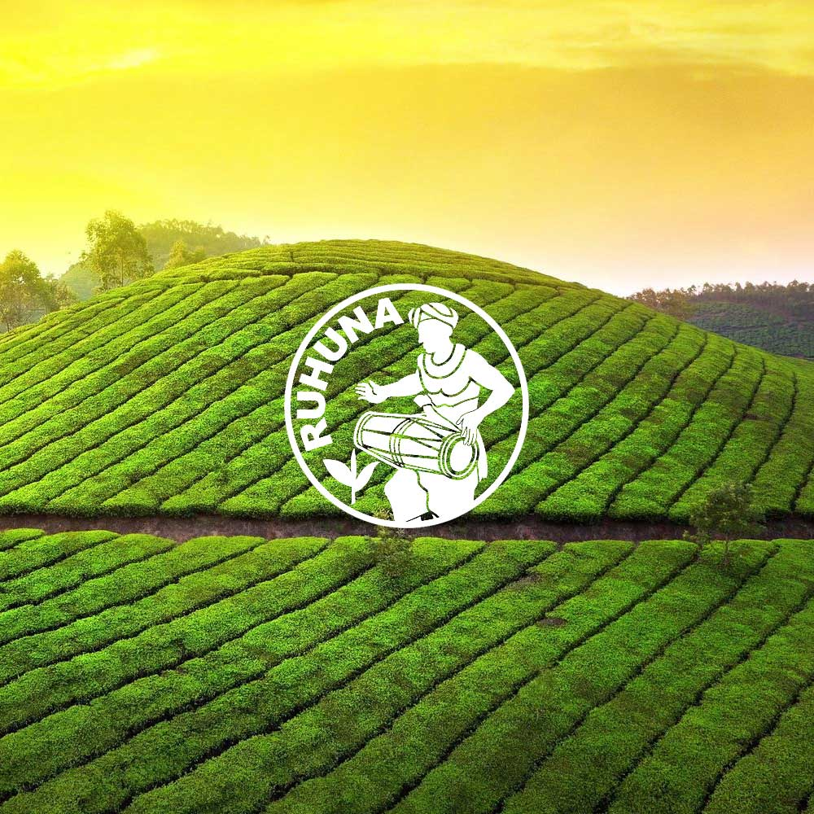

The History of Ceylon Tea
From a colonial accident to a global icon — the extraordinary 150-year journey of the world's most celebrated tea, born in the misty highlands of Sri Lanka.
1867
First Estate Planted
150+
Years of Heritage
4th
Largest Tea Exporter
300K+
Tonnes Exported / Year
Before Tea: The Coffee Era
Long before Sri Lanka became synonymous with tea, the island was a thriving coffee producer. Under British colonial rule in the early 19th century, the central highlands were blanketed with coffee plantations — a profitable enterprise that supported the colonial economy for decades.
The island's coffee industry reached its peak in the 1860s, employing tens of thousands of Tamil labourers brought from South India and generating enormous wealth for British planters. The central highland towns of Kandy, Nuwara Eliya, and Badulla were built around the coffee trade.
But in 1869, disaster struck. A catastrophic fungal disease — Hemileia vastatrix, known as coffee leaf rust — swept through the plantations with devastating speed. Within fifteen years, virtually every coffee plant on the island had been destroyed. The planters were ruined, the labourers unemployed, and the highland economy in freefall.
"The coffee blight was a catastrophe — but it opened the door to something far greater."

Pre-1867
The Coffee Era

1867
Loolecondera Estate
James Taylor & the First Plantation
Into the ruins of the coffee industry stepped James Taylor — a young Scottish planter who had arrived in Ceylon in 1851 at the age of sixteen. Taylor had been experimenting with tea cultivation on a modest plot on the Loolecondera Estate near Kandy, curious about the plant's potential to replace the devastated coffee crop.
In 1867, Taylor planted the first commercial tea estate on nineteen acres of the Loolecondera hillside in Kandy district. Using seeds obtained from the Calcutta Botanical Gardens and techniques he had studied from Assam, he methodically cultivated and processed the leaves in a small factory built with his own hands.
By 1872 he had built a fully operational factory, and by 1873 the first shipment of Ceylon tea — just 23 pounds — was sold at auction in London to an astonished market. The quality was described as exceptional. Ceylon's tea industry was born.
Tragically, James Taylor died in 1892, never fully receiving the recognition his pioneering work deserved. He is today celebrated as the Father of Ceylon Tea.
150 Years of Ceylon Tea
From a single nineteen-acre plot to a global industry that employs over one million people — the milestones that shaped Sri Lanka's greatest export.
First Tea Plant Arrives
The first tea plant is brought to Sri Lanka from China and planted in the Royal Botanical Gardens at Peradeniya, Kandy — purely as a botanical curiosity, with no commercial intent.


First Commercial Plantation
James Taylor plants the first commercial tea crop on 19 acres at Loolecondera Estate, Kandy. This is the founding moment of the entire Ceylon tea industry.
First Processing Factory
Taylor builds the first tea-processing factory at Loolecondera, enabling large-scale rolling and drying of leaves. The following year, Ceylon tea reaches London auction for the first time.

Rapid National Expansion
Tea plantations spread rapidly across the central highlands — Nuwara Eliya, Dimbula, Uva, and beyond. By 1890 the industry covers over 300,000 acres, replacing coffee entirely.
Independence & National Pride
Ceylon gains independence from Britain. Tea, already the island's most valuable export, becomes a symbol of national identity and economic sovereignty for the newly independent nation.


Ceylon Becomes Sri Lanka
The nation is renamed Sri Lanka, but the tea retains the iconic "Ceylon Tea" brand internationally — a name so trusted it was protected by law and remains the global mark of quality to this day.
A Global Icon
Sri Lanka is the world's 4th largest tea producer and exporter, shipping over 300,000 tonnes annually to more than 100 countries. Tea employs over one million Sri Lankans and contributes over $1.25 billion to the national economy each year.

First Tea Plant Arrives
The first tea plant is brought to Sri Lanka from China and planted at the Royal Botanical Gardens in Peradeniya, Kandy.
First Commercial Plantation
James Taylor plants the first commercial tea crop on 19 acres at Loolecondera Estate — the founding moment of the Ceylon tea industry.
First Processing Factory
Taylor builds the first tea-processing factory. By 1873 the first Ceylon tea reaches the London auction market.
Rapid National Expansion
Tea plantations spread across the highlands. By 1890 they cover over 300,000 acres, replacing coffee entirely.
Independence & National Pride
Ceylon gains independence. Tea becomes a symbol of national identity and economic sovereignty.
Ceylon Becomes Sri Lanka
The nation is renamed but the "Ceylon Tea" brand is protected internationally — still the global gold standard.
A Global Icon
Sri Lanka exports 300,000+ tonnes annually to 100+ countries, employing over one million people.
What Makes Ceylon Tea Unique
The term "Ceylon Tea" is not just a name — it is a legally protected geographical indication, much like Champagne or Darjeeling. Only tea grown, manufactured, and packed in Sri Lanka may carry the iconic Ceylon Tea logo: a golden lion holding a sword, encircled by the words "Ceylon Tea."
The uniqueness of Ceylon tea comes from the island's remarkable geography. Sri Lanka is a small island, yet within its borders exist seven distinct agro-climatic zones — each producing tea with completely different flavor profiles. High-grown teas from Nuwara Eliya (above 1,800m) are light and floral; mid-grown teas from Kandy are full-bodied and robust; low-grown teas from Ruhuna are dark and intensely flavored.
Unlike many other tea-producing nations, Sri Lanka produces tea year-round due to its equatorial location. The monsoon seasons that affect different regions at different times actually produce the celebrated "quality seasons" — periods of intense flavor and aroma that connoisseurs prize above all.
Unique Geography
7 distinct growing regions from sea level to 2,500m elevation on a single small island.
Year-Round Harvest
Equatorial location means continuous production unlike most other tea-producing nations.
Protected Brand
The Ceylon Tea lion logo is a registered geographical indication — a legal guarantee of origin and quality.
Hand-Picked Only
Every leaf is still hand-plucked by skilled workers — a centuries-old tradition that machine harvesting cannot replicate.
Tea & the Soul of Sri Lanka
Tea is not just Sri Lanka's biggest export — it is woven into the culture, the landscape, the economy, and the daily life of every Sri Lankan.
1 Million+ Livelihoods
More than one million Sri Lankans — pluckers, factory workers, managers, exporters, and transporters — depend directly on the tea industry for their livelihood. Millions more are indirectly supported through related industries.
$1.25 Billion Economy
Ceylon tea contributes over $1.25 billion USD in annual foreign exchange earnings, making it one of the single most important contributors to the Sri Lankan national economy and a cornerstone of the country's trade balance.
Exported to 100+ Nations
Ceylon tea is exported to more than 100 countries across every continent. The largest markets include Russia, the Middle East, Iran, Turkey, China, the United Kingdom, and the United States — testament to its universal appeal.
"Sri Lanka may be a small island, but in the world of tea it stands as a giant — its name spoken with reverence in every tea house from London to Tokyo, from Moscow to New York."
Ceylon Tea Board